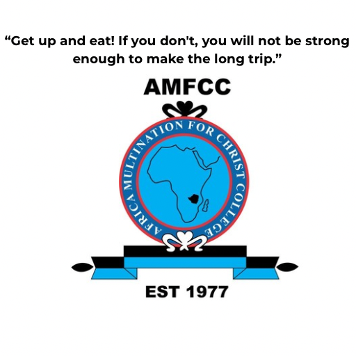

AMFCC Student Services
Choose a student service
🍽️
Meal Check-In
Students and kitchen staff
🎫
Personal Gate Passes
Submit and track personal leave requests

Choose a student service
Students and kitchen staff
Submit and track personal leave requests